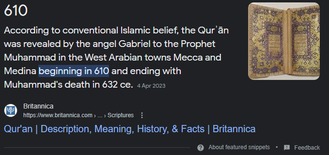

The Quran was revealed to the Prophet Muhammed (SAW) in 610-632 AD whereas the first manuscript of a Hadith was in approx. 844-1185 AD. But it's hard to tell because we don't have many old sources of Hadith.
So 212-553 years after the Prophet's (SAW) death and after the complete Quran (assuming the Quran was completed right at the death of the Prophet (SAW)).
If you say that you need Hadith to explain or to change the meaning of the Quran, then aren't you saying that the Quran is incomplete and needs further explanation.
6:114
"Shall I seek other than God as a judge when He has sent down to you the Book fully detailed?" Those to whom We have given the Book know it is sent down from your Lord with the truth; so do not be of those who have doubt.
6:115
And the word of your Lord is completed with truth and justice; there is no changing His words. He is the Hearer, the Knower.
6:38
And there is not a creature on the earth, nor a bird that flies with its wings, except they belong to nations like you belong. We did not leave anything out of the record; then to their Lord they will be gathered.
6:116
And if you obey most of those on the earth they will lead you away from the path of God; that is because they follow conjecture, and that is because they only guess.
33:40
Mohammed is not the father of any of your men, but he is the messenger of God and the seal of the prophets. And God is fully aware of all things.
Quran translation: The Monotheist Group (www.free-minds.org)